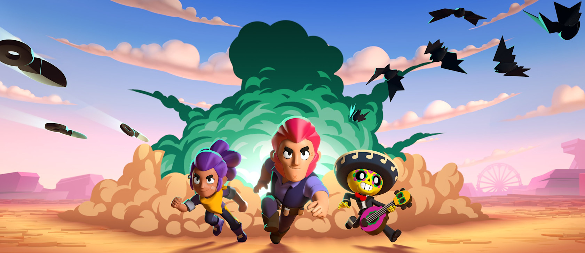
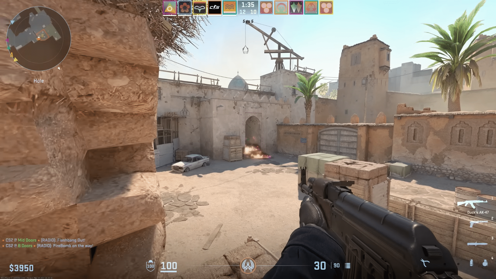
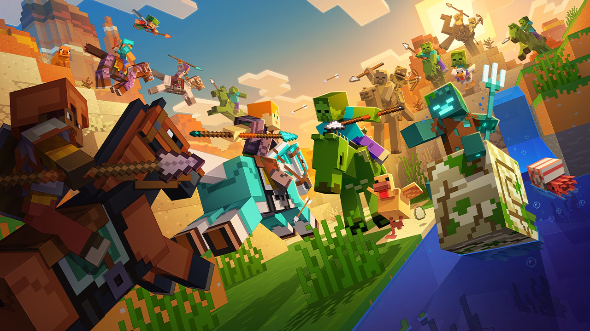

Guides & Walkthroughs
Step-by-step guides written so a first-time player can actually follow them.

Brawl Stars: Best Brawlers Guide
Top strategies and best brawlers for every game mode to help you push trophies.
Read guide
Counter-Strike 2: Utility Lineups
Essential smoke and flash lineups for competitive maps to give your team the edge.
Read guide
Minecraft: Survival Mechanics
Step-by-step guide to gathering resources and building a secure base on your first night.
Read guideHow We Write Our Guides
- Play the game fully before writing anything
- Note the steps that actually confuse new players
- Write short, numbered steps instead of long paragraphs
- Add screenshots for anything hard to describe in words
Brawl Stars: Pick with a Plan
- Check the mode and map before choosing a brawler.
- Use cover and keep enough range to suit your character.
- Save your super for a clear objective or a coordinated team push.
Counter-Strike 2: Practice Utility
- Open a practice map and choose one entrance to defend.
- Pick a repeatable standing position and aim at a fixed landmark.
- Test your smoke or flash, check where it lands, and repeat before using it with your team.
Minecraft: Your First Night
- Gather wood and craft a workbench and basic tools.
- Collect stone and food before exploring far from spawn.
- Build an enclosed shelter, add light, and save a safe exit for morning.